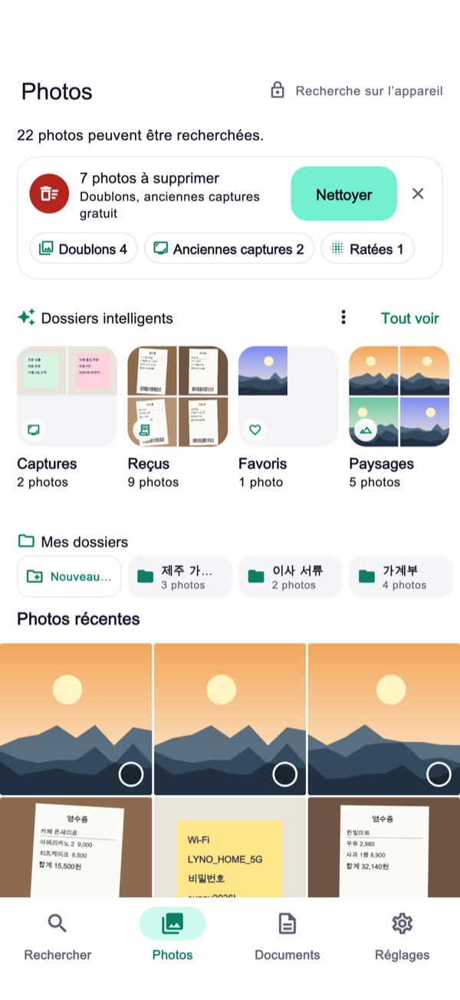
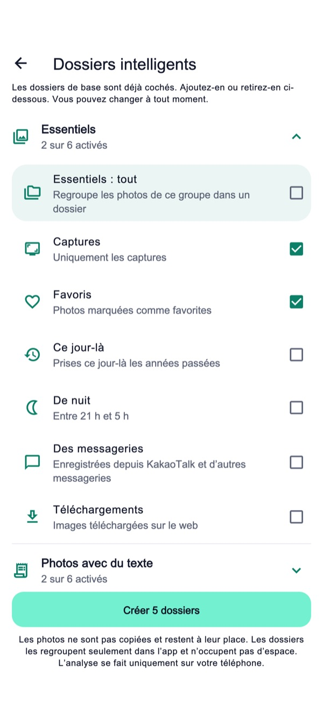

Utiliser les dossiers intelligents
1. Que sont les dossiers intelligents ?
LYNO Find range vos photos dans des dossiers tout seul. Les nouvelles photos vont automatiquement dans les bons dossiers.

2. Quels dossiers existent ?
Activés dès le départ : Captures, Selfies, Favoris, Par lieu, Voyages, Reçus, Notes, Repas, Animaux
À activer : 38 dossiers en 8 groupes : Essentiels, Lieux et voyages, Photos avec du texte, Personnes et animaux, Événements, Loisirs et sport, Objets et repas, Nature et paysages
3. Comment les utiliser ?
1. Touchez l’onglet Photos en bas.
2. Dans Dossiers intelligents, touchez « Tout voir » pour ouvrir les dossiers.
3. Dans « Choisir les dossiers », ouvrez un groupe et activez ou désactivez les dossiers.
4. Activez la première ligne d’un groupe, comme « Loisirs et sport : tout », pour réunir tout le groupe dans un dossier.

4. Rien n’est déplacé
Les photos ne sont jamais copiées ni déplacées. Les originaux restent en place ; les dossiers les rassemblent seulement. Tout le tri se fait sur votre téléphone.